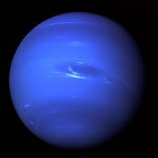

Planeta do sistema solar mais distante do Sol e o quarto maior em tamanho, Netuno possui 14 satélites naturais e apresenta temperaturas médias de aproximadamente -200°C. Trata-se de um planeta gasoso, formado principalmente por hidrogênio, hélio, amônia, metano e água. O movimento de rotação do planeta dura cerca de 16 horas, enquanto sua translação equivale a 164 anos terrestres.